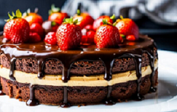

Bombón Suizo
Vamos a descubrir juntos la magia de los bombones suizos, esos pequeños tesoros llenos de chocolate. Sigue mi receta y prepárate para regalarte momentos de pura indulgencia que te van a hacer sentir en una montaña de Suiza, rodeado de delicioso chocolate.
|

Receta fácil de la torta de bombón suizo |
Ingredientes Ingredientes para el relleno y la cobertura del bombón suizo |
Paso a Paso
- Precalentar el horno a 180 °C, enmantecar y enharinar un molde redondo desmontable
- Derretir el chocolate con la manteca a baño maría hasta obtener una mezcla suave y homogénea
- En un bol batir los huevos y el azúcar hasta obtener una mezcla espumosa
- Agregar la mezcla de chocolate derretido a los huevos batidos e integrar
- Tamizar la harina, el polvo de hornear y la pizca de sal, e incorporarlos de a tandas en la mezcla de chocolate y huevos, integrando cada vez para que no se formen grumos
- Verter la masa en el molde preparado y hornear durante aproximadamente 35-40 minutos, o hasta que al insertar un palillo en el centro, este salga limpio
- Retirar del horno y dejar enfriar la torta antes de desmoldar sobre un plato. Reservar.
- Batir la crema con el azúcar y la esencia de vainilla hasta que esté firme
- Batir la crema con el azúcar y la esencia de vainilla hasta que esté firme
- Cortar el bizcochuelo a la mitad y rellenar con la crema. Llevar a la heladera por 1 o 2 horas
- En un recipiente resistente al calor, derretir el chocolate con las dos cucharadas de café y la manteca a baño maría. Una vez derretido retirar el recipiente del calor
- Cubrir la torta con el chocolate, con ayuda de una cuchara o espátula. Se puede hacer sobre una rejilla para no manchar el plato o fuente.
- Llevar a la heladera nuevamente por 2 o 3 horas
- Disfrutarla con un café o una copita de cognac!!!
-
Para el elleno y cobertura